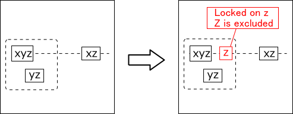
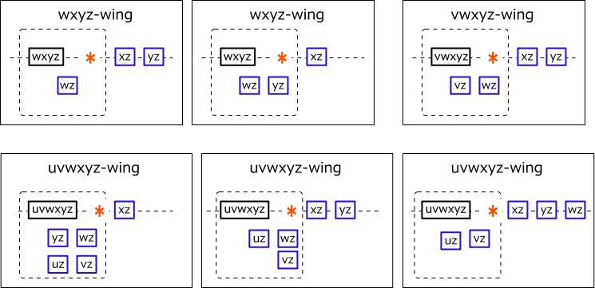
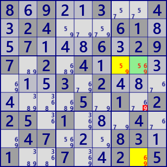
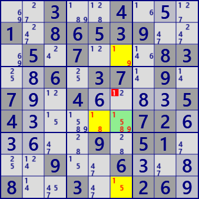

XYZ-Wing evolves into "ALS Death Blossom" .
XYZ-Wing（Basic form）
XYZ-Wing is an analysis algorithm that uses the intersection of blocks and rows(or columns).
It is assumed that the candidate number is a cell of xyz,
the candidate numbers of other cells belonging to the same row are xz,
and the candidate numbers of other cells belonging to the same block are yz.
At this time, the candidate number z can be excluded from the cell
that is as the same block and same row(right figure).
Even if rows are replaced with columns.

Let candidate number and cell number be orders.
There are 4th to 6th order analysis algorithms.
WXYZ-Wing(4th), VWXYZ-Wing(5th), UVWXYZ-Wing (6th)
In both cases, the cells other than the axis cell are bivalue (two candidate).
Also, in case of 3rd order, there was 1 cell placement in each row and block,
but there are various variations in arrangement of 4th order or more(next figure)
The cell marked with* is in Locked and the number Z is excluded from this cell.
However, the condition
"all the cells have a targeted number, and all bivalue cells except the target cell" are too strict.
Patterns of 4th order or higher are rare.
The way to relax the condition of bivalue (XYZ-WingEx) is shown later.

The point of this analysis method is Locked when a cell is focused, if bivalue cells in the influence area of the cell are aggregated in row/block(or column/block), it agrees with the candidate number of the focused cell.
Here is an example of XYZ-Wing. (Left: XYZ-Wing right: WXYZ-Wing)
 8.9..3..4.24...61..7...6.297.2.4.......3.2.......5.1.225.1...4..47...83.1..7..2.5
..3..4...1.86539...5.7...83..6.37.9.7..4....54.....72.....9.51...9..6...8..3..26.
XY-Wing C# program
The analysis algorithm is as follows.
If assembled in order as shown in the image diagram, the algorithm can be easily constructed.
public partial class SimpleUVWXYZwingGen: AnalyzerBaseV2{
public List<UCell> FBCX;
public SimpleUVWXYZwingGen( GNPX_AnalyzerMan AnMan ): base(AnMan){
FBCX=null;
}
public override void Initialize(){ FBCX=null; }
public bool XYZwing( ){ return _UVWXYZwing(3); } //XYZ-wing
public bool WXYZwing( ){ return _UVWXYZwing(4); } //WXYZ-wing
public bool VWXYZwing( ){ return _UVWXYZwing(5); } //VWXYZ-wing
public bool UVWXYZwing( ){ return _UVWXYZwing(6); } //UVWXYZ-wing
private bool _UVWXYZwing( int wsz ){ //simple UVWXYZwing
if(FBCX==null) FBCX = pBDL.FindAll(p=>p.FreeBC==wsz);
if( FBCX.Count==0 ) return false;
bool wingF=false;
foreach( var P0 in FBCX ){ //focused cell
int b0=P0.b; //focused block
foreach( int no in P0.FreeB.IEGet_BtoNo() ){ //focused number
int noB=1<<no;
Bit81 P0con = (new Bit81(pBDL,noB,FreeBC:2)) & ConnectedCells[P0.rc];
Bit81 Pin = P0con&HouseCells[18+P0.b];
Bit81 Pout=null, Pin2=null;
for( int dir=0; dir<2; dir++ ){ //dir 0:row 1:col
int rcDir = (dir==0)? P0.r: (9+P0.c);
Pin2 = Pin-HouseCells[rcDir];
if( Pin2.IsZero() ) continue;
Pout = (P0con&HouseCells[rcDir])-HouseCells[18+P0.b];
if( Pin2.Count+Pout.Count != (wsz-1) ) continue;
int FreeBin = Pin2.AggregateFreeB(pBDL);
int FreeBout = Pout.AggregateFreeB(pBDL);
if( (FreeBin|FreeBout)!=P0.FreeB ) continue;
Bit81 ELst = HouseCells[rcDir]&HouseCells[18+P0.b];
ELst.BPReset(P0.rc);
string msg3="";
foreach( var E in ELst.IEGet_rc().Select(p=>pBDL[p]) ){
if( (E.FreeB&noB)>0 ){
E.CancelB=noB; wingF=true;
msg3 += " "+E.rc.ToRCString();
}
}
if(!wingF) continue;
//--- ...wing fond -------------
.
. (Solution report code)
.
return true;
}
}
}
return false;
}
}